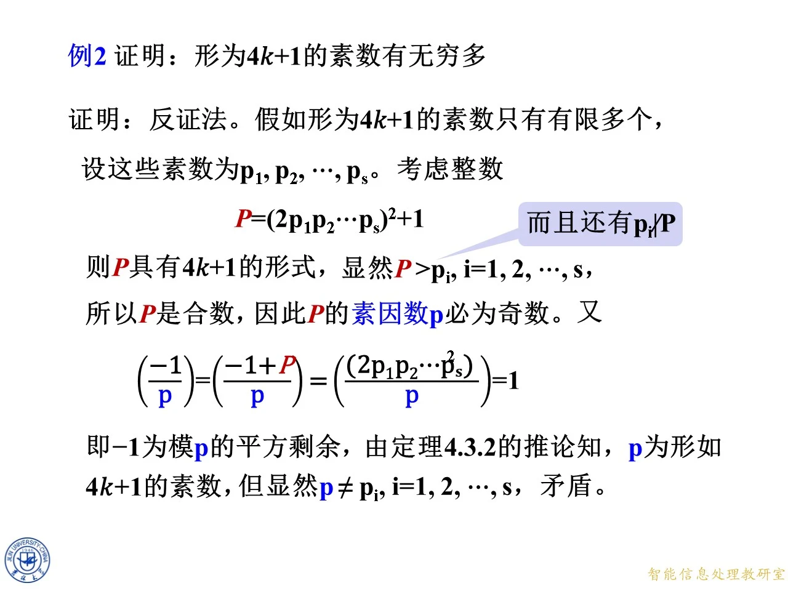

4.4 素数形状与证明应用
◆ p.281-289 ｜例2：形如 4 k + 1 4k+1 4 k + 1
这是把符号反向使用的第一个范例。证明用反证法，逐行看：
第一句，假设形如 4 k + 1 4k+1 4 k + 1 p 1 , p 2 , … , p s p_1,p_2,\ldots,p_s p 1 , p 2 , … , p s
第二句，构造 P = ( 2 p 1 p 2 ⋯ p s ) 2 + 1 P=(2p_1p_2\cdots p_s)^2+1 P = ( 2 p 1 p 2 ⋯ p s ) 2 + 1 P P P
第三句，P P P 4 k + 1 4k+1 4 k + 1 4 4 4 1 1 1 P ≡ 1 ( m o d 4 ) P\equiv1\pmod4 P ≡ 1 ( mod 4 ) P P P p i ∤ P p_i\nmid P p i ∤ P P ≡ 1 ( m o d p i ) P\equiv1\pmod{p_i} P ≡ 1 ( mod p i ) p i p_i p i 0 0 0 1 1 1
第四句，显然 P > p i P>p_i P > p i i = 1 , 2 , … , s i=1,2,\ldots,s i = 1 , 2 , … , s P P P P P P 4 k + 1 4k+1 4 k + 1 P P P P P P p p p P P P p p p
第五句是关键，用符号把 p p p
( − 1 p ) = ( − 1 + P p ) = ( ( 2 p 1 p 2 ⋯ p s ) 2 p ) = 1. \left(\frac{-1}{p}\right)=\left(\frac{-1+P}{p}\right)=\left(\frac{(2p_1p_2\cdots p_s)^2}{p}\right)=1. ( p − 1 ) = ( p − 1 + P ) = ( p ( 2 p 1 p 2 ⋯ p s ) 2 ) = 1.
第一个等号成立，是因为 − 1 -1 − 1 − 1 + P -1+P − 1 + P P P P p ∣ P p\mid P p ∣ P p p p − 1 + P -1+P − 1 + P 1 1 1 p p p p ∣ 2 p 1 ⋯ p s p\mid2p_1\cdots p_s p ∣ 2 p 1 ⋯ p s p p p
第六句，由定理 4.3.2 的推论，( − 1 p ) = 1 \left(\frac{-1}{p}\right)=1 ( p − 1 ) = 1 p ≡ 1 ( m o d 4 ) p\equiv1\pmod4 p ≡ 1 ( mod 4 ) p p p 4 k + 1 4k+1 4 k + 1 p ∤ p\nmid p ∤ p p p P P P p p p
拓展 （课件外补充）：为什么第四句必须强调"P P P P P P P P P { 5 , 13 } \{5,13\} { 5 , 13 } P = ( 2 ⋅ 5 ⋅ 13 ) 2 + 1 = 16901 P=(2\cdot5\cdot13)^2+1=16901 P = ( 2 ⋅ 5 ⋅ 13 ) 2 + 1 = 16901 16901 ≡ 1 ( m o d 4 ) 16901\equiv1\pmod4 16901 ≡ 1 ( mod 4 )
◆ p.290-292 ｜课后练习：形如 8 k − 1 8k-1 8 k − 1
课件只给提示，思路与例2同构，但构造和模数换成了 8 8 8 8 k − 1 8k-1 8 k − 1 p 1 , … , p s p_1,\ldots,p_s p 1 , … , p s P = ( 4 p 1 p 2 ⋯ p s ) 2 − 2 P=(4p_1p_2\cdots p_s)^2-2 P = ( 4 p 1 p 2 ⋯ p s ) 2 − 2
先看形状：平方项被 16 16 16 P ≡ − 2 ≡ 14 ( m o d 16 ) P\equiv-2\equiv14\pmod{16} P ≡ − 2 ≡ 14 ( mod 16 ) P ≡ 6 ( m o d 8 ) P\equiv6\pmod8 P ≡ 6 ( mod 8 ) P P P 2 2 2 2 ∥ P 2\|P 2∥ P P = 2 ( 8 Q 2 − 1 ) P=2(8Q^2-1) P = 2 ( 8 Q 2 − 1 )
对任一奇素因数 p p p − 2 + P = ( 4 p 1 ⋯ p s ) 2 -2+P=(4p_1\cdots p_s)^2 − 2 + P = ( 4 p 1 ⋯ p s ) 2
( 2 p ) = ( 2 + P p ) = ( ( 4 p 1 p 2 ⋯ p s ) 2 p ) = 1. \left(\frac{2}{p}\right)=\left(\frac{2+P}{p}\right)=\left(\frac{(4p_1p_2\cdots p_s)^2}{p}\right)=1. ( p 2 ) = ( p 2 + P ) = ( p ( 4 p 1 p 2 ⋯ p s ) 2 ) = 1.
由第二补充定律，( 2 p ) = 1 \left(\frac{2}{p}\right)=1 ( p 2 ) = 1 p ≡ ± 1 ( m o d 8 ) p\equiv\pm1\pmod8 p ≡ ± 1 ( mod 8 ) p p p 1 1 1 7 7 7
课件提示的下一行写成"可知其所有素因数 p p p 8 k + 1 8k+1 8 k + 1 1 1 1 7 7 7 7 7 7 P / 2 P/2 P /2 P / 2 = ∏ q n q P/2=\prod q^{n_q} P /2 = ∏ q n q q q q 1 ( m o d 8 ) 1\pmod8 1 ( mod 8 ) P / 2 ≡ 1 ( m o d 8 ) P/2\equiv1\pmod8 P /2 ≡ 1 ( mod 8 ) P / 2 = 8 Q 2 − 1 ≡ 7 ( m o d 8 ) P/2=8Q^2-1\equiv7\pmod8 P /2 = 8 Q 2 − 1 ≡ 7 ( mod 8 ) q q q 7 7 7 8 k − 1 8k-1 8 k − 1
最后一步与例2一致：这个 q q q p j p_j p j P + 2 P+2 P + 2 P ≡ − 2 ( m o d p j ) P\equiv-2\pmod{p_j} P ≡ − 2 ( mod p j ) p j p_j p j p j ∤ 2 p_j\nmid2 p j ∤ 2 p j ∤ P p_j\nmid P p j ∤ P q q q 8 8 8 7 7 7
拓展 （课件外补充）：用具体数字验证这条思路。取 p 1 = 7 p_1=7 p 1 = 7 p 2 = 23 p_2=23 p 2 = 23 8 k − 1 8k-1 8 k − 1 Q = 7 ⋅ 23 = 161 Q=7\cdot23=161 Q = 7 ⋅ 23 = 161 P = ( 4 ⋅ 161 ) 2 − 2 = 414734 = 2 ⋅ 207367 P=(4\cdot161)^2-2=414734=2\cdot207367 P = ( 4 ⋅ 161 ) 2 − 2 = 414734 = 2 ⋅ 207367 207367 ≡ 7 ( m o d 8 ) 207367\equiv7\pmod8 207367 ≡ 7 ( mod 8 ) 8 8 8 7 7 7 P P P 8 8 8 P / 2 P/2 P /2 1 1 1 7 7 7
◆ p.293-297 ｜例3：求所有奇素数 p p p 3 3 3
分析先点明目标：所求就是满足 ( 3 p ) = 1 \left(\frac{3}{p}\right)=1 ( p 3 ) = 1 p = 3 p=3 p = 3 3 ≡ 0 ( m o d 3 ) 3\equiv0\pmod3 3 ≡ 0 ( mod 3 ) 0 0 0 1 1 1 p ∤ a p\nmid a p ∤ a p = 3 p=3 p = 3 p > 3 p>3 p > 3
解的核心是一次互反律翻转。3 3 3 p p p 3 ≡ 3 ( m o d 4 ) 3\equiv3\pmod4 3 ≡ 3 ( mod 4 ) p p p 4 4 4
( 3 p ) = ( − 1 ) p − 1 2 ( p 3 ) . \left(\frac{3}{p}\right)=(-1)^{\frac{p-1}{2}}\left(\frac{p}{3}\right). ( p 3 ) = ( − 1 ) 2 p − 1 ( 3 p ) .
于是 ( 3 p ) = 1 \left(\frac{3}{p}\right)=1 ( p 3 ) = 1 1 1 1 ( − 1 ) p − 1 2 (-1)^{\frac{p-1}{2}} ( − 1 ) 2 p − 1 p m o d 4 p\bmod4 p mod 4 p ≡ 1 ( m o d 4 ) p\equiv1\pmod4 p ≡ 1 ( mod 4 ) 1 1 1 p ≡ − 1 ( m o d 4 ) p\equiv-1\pmod4 p ≡ − 1 ( mod 4 ) − 1 -1 − 1 ( p 3 ) \left(\frac{p}{3}\right) ( 3 p ) p m o d 3 p\bmod3 p mod 3 p ≡ 1 ( m o d 3 ) p\equiv1\pmod3 p ≡ 1 ( mod 3 ) ( 1 3 ) = 1 \left(\frac{1}{3}\right)=1 ( 3 1 ) = 1 p ≡ − 1 ( m o d 3 ) p\equiv-1\pmod3 p ≡ − 1 ( mod 3 ) ( − 1 3 ) = − 1 \left(\frac{-1}{3}\right)=-1 ( 3 − 1 ) = − 1
两个因子同号才得 1 1 1 p ≡ 1 ( m o d 4 ) p\equiv1\pmod4 p ≡ 1 ( mod 4 ) p ≡ 1 ( m o d 3 ) p\equiv1\pmod3 p ≡ 1 ( mod 3 ) p ≡ − 1 ( m o d 4 ) p\equiv-1\pmod4 p ≡ − 1 ( mod 4 ) p ≡ − 1 ( m o d 3 ) p\equiv-1\pmod3 p ≡ − 1 ( mod 3 )
◆ p.298-301 ｜把两条条件分别译成模 4 4 4 3 3 3
课件接下来的动画在做"翻译"：把模 3 3 3 6 6 6 4 4 4 2 2 2
p ≡ 1 ( m o d 3 ) p\equiv1\pmod3 p ≡ 1 ( mod 3 ) p ≡ 1 p\equiv1 p ≡ 1 4 ( m o d 6 ) 4\pmod6 4 ( mod 6 ) 6 6 6 1 1 1 4 4 4 3 3 3 1 1 1 p ≡ − 1 ( m o d 3 ) p\equiv-1\pmod3 p ≡ − 1 ( mod 3 ) p ≡ − 1 p\equiv-1 p ≡ − 1 2 ( m o d 6 ) 2\pmod6 2 ( mod 6 )
p ≡ ± 1 ( m o d 4 ) p\equiv\pm1\pmod4 p ≡ ± 1 ( mod 4 ) p p p p ≡ 1 ( m o d 2 ) p\equiv1\pmod2 p ≡ 1 ( mod 2 )
乍看这是把条件变弱了，其实是在为下一步"删去不可能的奇偶性"做准备：先列出模 6 6 6
◆ p.302-306 ｜删去不可能的剩余，合成模 12 12 12
课件在 p ≡ 1 , 4 ( m o d 6 ) p\equiv1,4\pmod6 p ≡ 1 , 4 ( mod 6 ) p ≡ − 1 , 2 ( m o d 6 ) p\equiv-1,2\pmod6 p ≡ − 1 , 2 ( mod 6 ) 4 4 4 2 2 2 p p p 4 4 4 2 2 2 6 6 6 3 3 3 p ≡ 1 ( m o d 6 ) p\equiv1\pmod6 p ≡ 1 ( mod 6 ) p ≡ − 1 ( m o d 6 ) p\equiv-1\pmod6 p ≡ − 1 ( mod 6 ) 4 4 4 p ≡ 1 p\equiv1 p ≡ 1 p ≡ − 1 ( m o d 4 ) p\equiv-1\pmod4 p ≡ − 1 ( mod 4 )
于是两种组合写成：p ≡ 1 ( m o d 4 ) p\equiv1\pmod4 p ≡ 1 ( mod 4 ) p ≡ 1 ( m o d 6 ) p\equiv1\pmod6 p ≡ 1 ( mod 6 ) p ≡ − 1 ( m o d 4 ) p\equiv-1\pmod4 p ≡ − 1 ( mod 4 ) p ≡ − 1 ( m o d 6 ) p\equiv-1\pmod6 p ≡ − 1 ( mod 6 ) 4 4 4 6 6 6 12 12 12 p ≡ 1 ( m o d 12 ) p\equiv1\pmod{12} p ≡ 1 ( mod 12 ) p ≡ − 1 ( m o d 12 ) p\equiv-1\pmod{12} p ≡ − 1 ( mod 12 ) 12 12 12 7 7 7 11 11 11 p ≡ 3 ( m o d 4 ) p\equiv3\pmod4 p ≡ 3 ( mod 4 ) 11 ≡ − 1 ( m o d 12 ) 11\equiv-1\pmod{12} 11 ≡ − 1 ( mod 12 ) p ≡ 5 ≡ − 1 ( m o d 6 ) p\equiv5\equiv-1\pmod6 p ≡ 5 ≡ − 1 ( mod 6 ) − 1 -1 − 1
◆ p.307-308 ｜例3 的最终答案
答案为 p ≡ ± 1 ( m o d 12 ) p\equiv\pm1\pmod{12} p ≡ ± 1 ( mod 12 ) 12 12 12 1 1 1 11 11 11 3 3 3 11 11 11 11 11 11 13 13 13 1 1 1 23 23 23 11 11 11 37 37 37 1 1 1 47 47 47 11 11 11
拓展 （课件外补充）：把四个剩余类逐个代进原式核对，能看清符号的来源。p ≡ 1 p\equiv1 p ≡ 1 ( − 1 ) p − 1 2 = 1 (-1)^{\frac{p-1}{2}}=1 ( − 1 ) 2 p − 1 = 1 ( p 3 ) = 1 \left(\frac{p}{3}\right)=1 ( 3 p ) = 1 1 1 1 p ≡ 5 p\equiv5 p ≡ 5 p ≡ 1 ( m o d 4 ) p\equiv1\pmod4 p ≡ 1 ( mod 4 ) 1 1 1 p ≡ 2 ( m o d 3 ) p\equiv2\pmod3 p ≡ 2 ( mod 3 ) − 1 -1 − 1 − 1 -1 − 1 p ≡ 7 p\equiv7 p ≡ 7 − 1 -1 − 1 p ≡ 1 ( m o d 3 ) p\equiv1\pmod3 p ≡ 1 ( mod 3 ) 1 1 1 − 1 -1 − 1 p ≡ 11 p\equiv11 p ≡ 11 − 1 -1 − 1 − 1 -1 − 1 1 1 1 1 1 1 11 11 11 7 7 7 19 19 19 31 31 31 3 3 3 7 7 7 1 , 2 , 4 1,2,4 1 , 2 , 4 11 11 11 23 23 23 47 47 47 3 3 3
◆ p.309-310 ｜练习：− 3 -3 − 3 5 5 5
第（1）问：找所有素数 p p p x 2 ≡ − 3 ( m o d p ) x^2\equiv-3\pmod p x 2 ≡ − 3 ( mod p ) p > 3 p>3 p > 3 p ≡ 1 ( m o d 6 ) p\equiv1\pmod6 p ≡ 1 ( mod 6 ) p > 3 p>3 p > 3 ( − 3 p ) = ( − 1 p ) ( 3 p ) \left(\frac{-3}{p}\right)=\left(\frac{-1}{p}\right)\left(\frac{3}{p}\right) ( p − 3 ) = ( p − 1 ) ( p 3 ) p ≡ 1 ( m o d 4 ) p\equiv1\pmod4 p ≡ 1 ( mod 4 ) ( − 1 p ) = 1 \left(\frac{-1}{p}\right)=1 ( p − 1 ) = 1 ( 3 p ) = 1 \left(\frac{3}{p}\right)=1 ( p 3 ) = 1 p ≡ ± 1 ( m o d 12 ) p\equiv\pm1\pmod{12} p ≡ ± 1 ( mod 12 ) p ≡ 1 ( m o d 4 ) p\equiv1\pmod4 p ≡ 1 ( mod 4 ) p ≡ 1 ( m o d 12 ) p\equiv1\pmod{12} p ≡ 1 ( mod 12 ) p ≡ 9 ( m o d 12 ) p\equiv9\pmod{12} p ≡ 9 ( mod 12 ) 3 3 3 p ≡ 3 ( m o d 4 ) p\equiv3\pmod4 p ≡ 3 ( mod 4 ) ( − 1 p ) = − 1 \left(\frac{-1}{p}\right)=-1 ( p − 1 ) = − 1 ( 3 p ) = − 1 \left(\frac{3}{p}\right)=-1 ( p 3 ) = − 1 p ≡ ± 5 ( m o d 12 ) p\equiv\pm5\pmod{12} p ≡ ± 5 ( mod 12 ) p ≡ 3 ( m o d 4 ) p\equiv3\pmod4 p ≡ 3 ( mod 4 ) 7 7 7 11 11 11 p ≡ 7 p\equiv7 p ≡ 7 p ≡ 1 p\equiv1 p ≡ 1 7 ( m o d 12 ) 7\pmod{12} 7 ( mod 12 ) p ≡ 1 ( m o d 6 ) p\equiv1\pmod6 p ≡ 1 ( mod 6 )
第（2）问：找所有素数 p p p x 2 ≡ 5 ( m o d p ) x^2\equiv5\pmod p x 2 ≡ 5 ( mod p ) p ≠ 5 p\ne5 p = 5 p = 2 p=2 p = 2 p ≡ 1 , 4 ( m o d 5 ) p\equiv1,4\pmod5 p ≡ 1 , 4 ( mod 5 ) p = 2 p=2 p = 2 5 ≡ 1 ( m o d 2 ) 5\equiv1\pmod2 5 ≡ 1 ( mod 2 ) x = 1 x=1 x = 1 p p p 5 ≡ 1 ( m o d 4 ) 5\equiv1\pmod4 5 ≡ 1 ( mod 4 ) ( 5 p ) = ( p 5 ) \left(\frac{5}{p}\right)=\left(\frac{p}{5}\right) ( p 5 ) = ( 5 p ) 5 5 5 1 1 1 4 4 4 ( p 5 ) = 1 \left(\frac{p}{5}\right)=1 ( 5 p ) = 1 p ≡ 1 p\equiv1 p ≡ 1 4 ( m o d 5 ) 4\pmod5 4 ( mod 5 )
课件底部的"注意"是两条方法论提醒。其一，对素数模而言，"x 2 ≡ a ( m o d p ) x^2\equiv a\pmod p x 2 ≡ a ( mod p ) p ∤ a p\nmid a p ∤ a a a a p p p p ∣ a p\mid a p ∣ a x ≡ 0 x\equiv0 x ≡ 0 x 2 ≡ 0 x^2\equiv0 x 2 ≡ 0 a a a p > 3 p>3 p > 3 p = 5 p=5 p = 5
拓展 （课件外补充）：把这两问与例3连起来看，会发现“− 3 -3 − 3 3 3 3 x 2 ≡ 3 x^2\equiv3 x 2 ≡ 3 p ≡ ± 1 ( m o d 12 ) p\equiv\pm1\pmod{12} p ≡ ± 1 ( mod 12 ) 12 12 12 1 1 1 11 11 11 x 2 ≡ − 3 x^2\equiv-3 x 2 ≡ − 3 ( − 1 p ) \left(\frac{-1}{p}\right) ( p − 1 ) 4 4 4 p ≡ 1 ( m o d 6 ) p\equiv1\pmod6 p ≡ 1 ( mod 6 ) 12 12 12 1 1 1 7 7 7 p ≡ 1 ( m o d 12 ) p\equiv1\pmod{12} p ≡ 1 ( mod 12 )
◆ p.311-315 ｜例4：非剩余排除 x 2 − d y 2 x^2-dy^2 x 2 − d y 2
题目：设 p p p d d d ( d p ) = − 1 \left(\frac{d}{p}\right)=-1 ( p d ) = − 1 p p p x 2 − d y 2 x^2-dy^2 x 2 − d y 2 x , y x,y x , y
证明开头先清理前提：由 ( d p ) = − 1 \left(\frac{d}{p}\right)=-1 ( p d ) = − 1 ( p , d ) = 1 (p,d)=1 ( p , d ) = 1 p ∤ d p\nmid d p ∤ d p p p p p p d d d
接着反设 p p p p = x 2 − d y 2 p=x^2-dy^2 p = x 2 − d y 2 p p p x x x p ∣ x p\mid x p ∣ x p ∤ x p\nmid x p ∤ x
这种"按整除性分类"是数论证明的常用骨架：整除分支通常直接导出矛盾，不整除分支则允许除法同余，把式子变形为平方同余。
◆ p.316-319 ｜若 p ∣ x p\mid x p ∣ x
沿 p ∣ x p\mid x p ∣ x p ∣ x p\mid x p ∣ x p ∣ x 2 p\mid x^2 p ∣ x 2 p ∣ p p\mid p p ∣ p p ∣ x 2 − p p\mid x^2-p p ∣ x 2 − p x 2 − p = d y 2 x^2-p=dy^2 x 2 − p = d y 2 p ∣ d y 2 p\mid dy^2 p ∣ d y 2 ( p , d ) = 1 (p,d)=1 ( p , d ) = 1 p ∣ y 2 p\mid y^2 p ∣ y 2 p p p p ∣ y p\mid y p ∣ y
于是 p 2 ∣ x 2 p^2\mid x^2 p 2 ∣ x 2 p 2 ∣ y 2 p^2\mid y^2 p 2 ∣ y 2 p 2 ∣ x 2 − d y 2 p^2\mid x^2-dy^2 p 2 ∣ x 2 − d y 2 x 2 − d y 2 = p x^2-dy^2=p x 2 − d y 2 = p p 2 ∤ p p^2\nmid p p 2 ∤ p p > 1 p>1 p > 1 p ∣ x p\mid x p ∣ x p ∤ x p\nmid x p ∤ x
拓展 （课件外补充）：这里有两处课件省略的理由值得补出。其一，"p ∣ y 2 p\mid y^2 p ∣ y 2 p ∣ y p\mid y p ∣ y p p p p p p 4 ∣ 2 2 4\mid2^2 4 ∣ 2 2 4 ∤ 2 4\nmid2 4 ∤ 2 p 2 ∣ x 2 p^2\mid x^2 p 2 ∣ x 2 p 2 ∣ y 2 p^2\mid y^2 p 2 ∣ y 2 p 2 ∣ x 2 − d y 2 p^2\mid x^2-dy^2 p 2 ∣ x 2 − d y 2 d d d p p p p 2 ∣ y 2 p^2\mid y^2 p 2 ∣ y 2 d y 2 dy^2 d y 2 p 2 p^2 p 2
◆ p.320-325 ｜于是 p ∤ x p\nmid x p ∤ x ( p , x ) = ( p , y ) = 1 (p,x)=(p,y)=1 ( p , x ) = ( p , y ) = 1
得到 p ∤ x p\nmid x p ∤ x p p p ( p , x ) = 1 (p,x)=1 ( p , x ) = 1 x x x p p p
还要说明 p ∤ y p\nmid y p ∤ y p ∣ y p\mid y p ∣ y p ∣ d y 2 p\mid dy^2 p ∣ d y 2 x 2 = p + d y 2 x^2=p+dy^2 x 2 = p + d y 2 p ∣ x 2 p\mid x^2 p ∣ x 2 p ∣ x p\mid x p ∣ x p ∤ x p\nmid x p ∤ x p ∤ y p\nmid y p ∤ y ( p , y ) = 1 (p,y)=1 ( p , y ) = 1 y y y
这两条互素性是下一步能“除以 y 2 y^2 y 2 p ∤ x 2 → p ∤ ( x 2 − p ) = d y 2 → p ∤ y p\nmid x^2\to p\nmid(x^2-p)=dy^2\to p\nmid y p ∤ x 2 → p ∤ ( x 2 − p ) = d y 2 → p ∤ y p ∣ x p\mid x p ∣ x ( p , d ) = 1 (p,d)=1 ( p , d ) = 1 p p p d d d p ∣ d y 2 p\mid dy^2 p ∣ d y 2 p ∣ y 2 p\mid y^2 p ∣ y 2
◆ p.326-331 ｜用符号等式收尾
最后一步是把表达式搬进符号里。由于 ( p , y ) = 1 (p,y)=1 ( p , y ) = 1 ( y 2 p ) = 1 \left(\frac{y^2}{p}\right)=1 ( p y 2 ) = 1
( d p ) = ( d p ) ( y 2 p ) = ( d y 2 p ) . \left(\frac{d}{p}\right)=\left(\frac{d}{p}\right)\left(\frac{y^2}{p}\right)=\left(\frac{dy^2}{p}\right). ( p d ) = ( p d ) ( p y 2 ) = ( p d y 2 ) .
第一个等号是乘 1 1 1 x 2 − p = d y 2 x^2-p=dy^2 x 2 − p = d y 2 p ∣ p p\mid p p ∣ p d y 2 ≡ x 2 ( m o d p ) dy^2\equiv x^2\pmod p d y 2 ≡ x 2 ( mod p )
( d y 2 p ) = ( x 2 − p p ) = ( x 2 p ) = 1. \left(\frac{dy^2}{p}\right)=\left(\frac{x^2-p}{p}\right)=\left(\frac{x^2}{p}\right)=1. ( p d y 2 ) = ( p x 2 − p ) = ( p x 2 ) = 1.
分子换成同余的 x 2 x^2 x 2 1 1 1 ( d p ) = 1 \left(\frac{d}{p}\right)=1 ( p d ) = 1 ( d p ) = − 1 \left(\frac{d}{p}\right)=-1 ( p d ) = − 1 p p p x 2 − d y 2 x^2-dy^2 x 2 − d y 2
拓展 （课件外补充）：这个结论只有一个方向，不能反过来用。符号为 − 1 -1 − 1 1 1 1 d = 4 d=4 d = 4 p = 3 p=3 p = 3 ( 4 3 ) = ( 2 3 ) 2 = 1 \left(\frac{4}{3}\right)=\left(\frac{2}{3}\right)^2=1 ( 3 4 ) = ( 3 2 ) 2 = 1 x 2 − 4 y 2 ≡ x 2 ( m o d 4 ) x^2-4y^2\equiv x^2\pmod4 x 2 − 4 y 2 ≡ x 2 ( mod 4 ) 3 3 3 4 4 4 x 2 + y 2 = p x^2+y^2=p x 2 + y 2 = p
◆ p.332-337 ｜练习四题：p p p
第（1）题：证明只有在 p = 2 p=2 p = 2 p ≡ 1 ( m o d 6 ) p\equiv1\pmod6 p ≡ 1 ( mod 6 ) − 3 -3 − 3 p p p x 2 + 3 ≡ 0 ( m o d p ) x^2+3\equiv0\pmod p x 2 + 3 ≡ 0 ( mod p ) p = 2 p=2 p = 2 − 3 ≡ 1 ( m o d 2 ) -3\equiv1\pmod2 − 3 ≡ 1 ( mod 2 ) x = 1 x=1 x = 1 p > 3 p>3 p > 3 ( − 3 p ) = 1 \left(\frac{-3}{p}\right)=1 ( p − 3 ) = 1 p ≡ 1 ( m o d 6 ) p\equiv1\pmod6 p ≡ 1 ( mod 6 ) p = 3 p=3 p = 3 − 3 ≡ 0 ( m o d 3 ) -3\equiv0\pmod3 − 3 ≡ 0 ( mod 3 ) x 2 ≡ 0 x^2\equiv0 x 2 ≡ 0 x ≡ 0 x\equiv0 x ≡ 0 3 3 3
第（2）题：设 ( x , y ) = 1 (x,y)=1 ( x , y ) = 1 x 2 + y 2 x^2+y^2 x 2 + y 2 x 2 − 2 y 2 x^2-2y^2 x 2 − 2 y 2 p ∣ x 2 + y 2 p\mid x^2+y^2 p ∣ x 2 + y 2 p ∣ y p\mid y p ∣ y p ∣ x 2 p\mid x^2 p ∣ x 2 p ∣ x p\mid x p ∣ x ( x , y ) = 1 (x,y)=1 ( x , y ) = 1 y y y p p p y − 2 y^{-2} y − 2 ( x y − 1 ) 2 ≡ − 1 ( m o d p ) (xy^{-1})^2\equiv-1\pmod p ( x y − 1 ) 2 ≡ − 1 ( mod p ) ( − 1 p ) = 1 \left(\frac{-1}{p}\right)=1 ( p − 1 ) = 1 p ≡ 1 ( m o d 4 ) p\equiv1\pmod4 p ≡ 1 ( mod 4 ) p ∣ x 2 − 2 y 2 p\mid x^2-2y^2 p ∣ x 2 − 2 y 2 ( x y − 1 ) 2 ≡ 2 ( m o d p ) (xy^{-1})^2\equiv2\pmod p ( x y − 1 ) 2 ≡ 2 ( mod p ) ( 2 p ) = 1 \left(\frac{2}{p}\right)=1 ( p 2 ) = 1 p ≡ ± 1 ( m o d 8 ) p\equiv\pm1\pmod8 p ≡ ± 1 ( mod 8 ) p ≡ 1 p\equiv1 p ≡ 1 7 ( m o d 8 ) 7\pmod8 7 ( mod 8 )
第（3）题：设 ( a , p ) = 1 (a,p)=1 ( a , p ) = 1 p p p p ≡ 1 ( m o d 4 ) p\equiv1\pmod4 p ≡ 1 ( mod 4 ) a a a − a -a − a p ≡ 3 ( m o d 4 ) p\equiv3\pmod4 p ≡ 3 ( mod 4 ) ( a p ) ( − a p ) = ( − a 2 p ) = ( − 1 p ) ( a 2 p ) = ( − 1 p ) \left(\frac{a}{p}\right)\left(\frac{-a}{p}\right)=\left(\frac{-a^2}{p}\right)=\left(\frac{-1}{p}\right)\left(\frac{a^2}{p}\right)=\left(\frac{-1}{p}\right) ( p a ) ( p − a ) = ( p − a 2 ) = ( p − 1 ) ( p a 2 ) = ( p − 1 ) 1 1 1 − 1 -1 − 1 ( − 1 p ) = 1 \left(\frac{-1}{p}\right)=1 ( p − 1 ) = 1 p ≡ 1 ( m o d 4 ) p\equiv1\pmod4 p ≡ 1 ( mod 4 )
第（4）题：设 p , q p,q p , q 4 n + 3 4n+3 4 n + 3 x 2 ≡ p ( m o d q ) x^2\equiv p\pmod q x 2 ≡ p ( mod q ) x 2 ≡ q ( m o d p ) x^2\equiv q\pmod p x 2 ≡ q ( mod p ) ( p q ) = − 1 \left(\frac{p}{q}\right)=-1 ( q p ) = − 1 ( p q ) ( q p ) = ( − 1 ) p − 1 2 ⋅ q − 1 2 \left(\frac{p}{q}\right)\left(\frac{q}{p}\right)=(-1)^{\frac{p-1}{2}\cdot\frac{q-1}{2}} ( q p ) ( p q ) = ( − 1 ) 2 p − 1 ⋅ 2 q − 1 p , q p,q p , q 3 3 3 4 4 4 p − 1 2 \frac{p-1}{2} 2 p − 1 q − 1 2 \frac{q-1}{2} 2 q − 1 − 1 -1 − 1 ( q p ) = 1 \left(\frac{q}{p}\right)=1 ( p q ) = 1 x 2 ≡ q ( m o d p ) x^2\equiv q\pmod p x 2 ≡ q ( mod p )
拓展 （课件外补充）：第（4）题是 4.4 节二次互反律最典型的应用形式：两个都余 3 3 3 4 4 4 4 k + 3 4k+3 4 k + 3

课件原图 · 10月12日授课 · 第 322 页 查看前后已收录原页 →